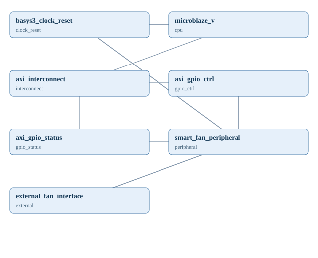

Basys3 스마트 팬·모터 PWM 및 회전 펄스 계측
100 MHz 동기 RTL로 8비트 PWM 및 1초 회전 펄스 계측을 구현하고, MicroBlaze V SoC에서는 AXI GPIO 제어/상태 채널로 연결하는 종합과제 설계. 현재 RTL/테스트벤치 실습 예제이며 완성된 Vivado Block Design이 아니다.
구조도 · 실제 포트명 기준

| 모듈 ID | 코드 모듈 / IP | 입력 | 출력 |
|---|---|---|---|
| clock_reset | basys3_clock_reset | clk, rst | |
| cpu | microblaze_v | clk, reset | m_axi |
| interconnect | axi_interconnect | s_axi | m_axi_ctrl, m_axi_status |
| gpio_ctrl | axi_gpio_ctrl | s_axi | gpio_io_o |
| gpio_status | axi_gpio_status | s_axi, gpio_io_i | |
| peripheral | smart_fan_peripheral | clk, rst, duty, enable, tach_in | pwm_out, tach_pulses_per_sec |
| external | external_fan_interface | pwm_in | tach_out |
신호 연결표
| 출발 | 도착 | 연결 유의 |
|---|---|---|
| clock_reset.clk | cpu.clk | 100 MHz 보드 클럭; 실제 연결은 Vivado Clock Wizard/Reset 구성에 따라 확인 |
| clock_reset.rst | cpu.reset | 리셋 극성은 CPU/RTL별 맞춤 필요 |
| clock_reset.clk | peripheral.clk | 단일 클럭 도메인 |
| clock_reset.rst | peripheral.rst | 동기 active-high reset |
| cpu.m_axi | interconnect.s_axi | AXI 연결 개념; CPU/Interconnect 구성 확인 |
| interconnect.m_axi_ctrl | gpio_ctrl.s_axi | AXI GPIO 9-bit OUTPUT |
| interconnect.m_axi_status | gpio_status.s_axi | AXI GPIO 32-bit INPUT |
| gpio_ctrl.gpio_io_o | peripheral.duty | gpio_io_o[7:0] → duty[7:0]; Top 비트 선택만 사용 |
| gpio_ctrl.gpio_io_o | peripheral.enable | gpio_io_o[8] → enable |
| peripheral.tach_pulses_per_sec | gpio_status.gpio_io_i | 32-bit pulse count snapshot, 1-second interval |
| peripheral.pwm_out | external.pwm_in | 3.3V logic to compatible driver/isolated interface, not motor power |
| external.tach_out | peripheral.tach_in | 3.3V conditioned tach input; 2-FF synchronizer |
실행소스
하드웨어 / BOM
| 부품 | 수량 | 인터페이스 | 설명 |
|---|---|---|---|
| Digilent Basys3 | 1 | 100MHz clock / 3.3V I/O | 실제 핀은 XDC 검증 후 배정 |
| 3.3V-compatible external PWM driver / fan interface | 1 | PWM output | 12V 모터/팬 직접 연결 금지 |
| 3.3V-conditioned tach output or logic pulse generator | 1 | tach input | 5V/12V 신호 직접 연결 금지 |
| External motor/fan power supply | as required | external | FPGA I/O 전원과 별도, 접지·절연 설계 확인 |
검증 및 제약
독립 RTL 및 테스트벤치 제공. AXI Block Design, XDC 핀 확정, 합성·구현·Timing·실제 팬 제어 테스트는 수행되지 않았습니다. verification.json에 실제 실행 결과만 기록합니다.
Basys3 I/O는 3.3V입니다. 팬/모터 전원·타코 신호를 직접 연결하지 마세요. 드라이버 전압·전류·절연·공통 접지 및 팬 인터페이스 규격을 검증하십시오.
참고 출처
이 저장소에서 새로 작성한 독립 RTL 교육 예제. 타사 공개 소스를 복제하지 않았습니다.